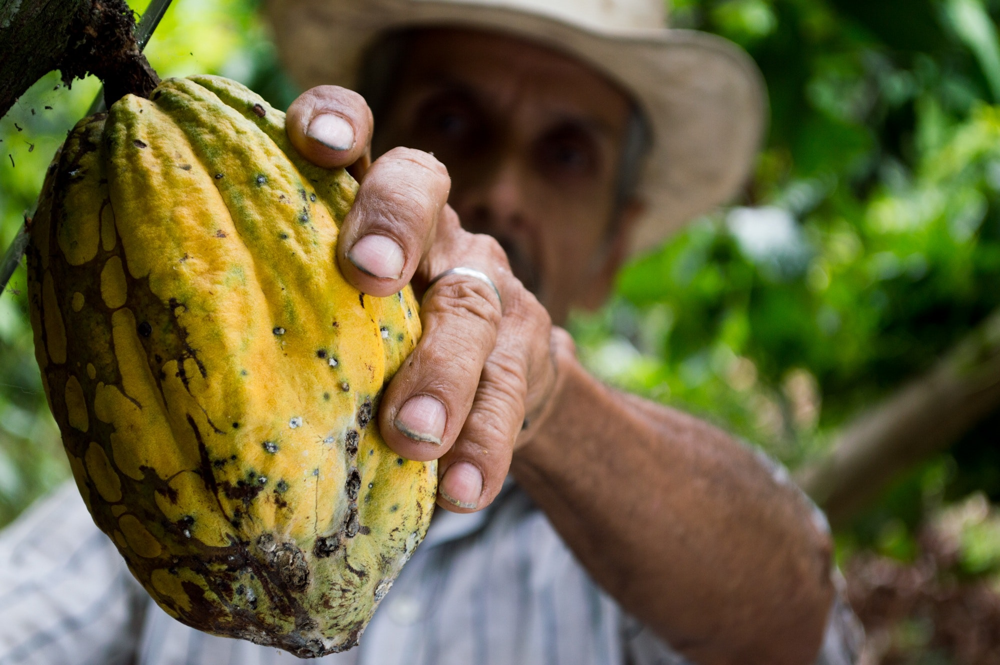

El cacao, principal ingrediente del chocolate, es uno de los alimentos más evocativos y ocupa un lugar muy especial en mi cocina. Me trae a la memoria mi niñez en Ecuador y Brasil en donde crecí rodeada de plantaciones de cacao. Mi padre trabajaba en diversas investigaciones con este producto así que uno de los recuerdos más tempranos que tengo son esos árboles de cacao cargados de vainas doradas con formas inverosímiles que colgaban de sus ramas, y el sabor de la increíblemente aromática carne blanca de sus pepas.
Estoy segura que esas memorias de la infancia son las que me trajeron de vuelta a Colombia, ya desde hace una década. El cacao es un tesoro para Latinoamérica Desde siempre, el cacao ha sido valorado como un ingrediente de lujo. Debido a su producción escasa y su elevada demanda, siempre ha tenido elevados precios en el mercado. Hoy es considerado el producto de lujo más asequible disponible para el consumo. Su larga historia se origina en la Alta Amazonía, lo que hoy conocemos como Colombia y Ecuador, y se desplazó hace milenios hacia las civilizaciones mesoamericanas, olmecas y mayas, que domesticaron sus frutos y los volvieron la comida de los dioses. Sería la nobleza azteca la que los denominaría Kak’aw, lo que los conquistadores entenderían como cacao y llegarían a valorarlo más que las piedras preciosas, que la plata y el oro.
Las culturas ancianas preparaban una bebida llamada Xocolat. Batida con molinos de oro, sus frutos eran tostados y molidos junto con el maíz, mezclados con agua y luego servidos en vasijas ornamentadas de cerámica. América Latina tiene una larga tradición de beber chocolate caliente y seguramente el ritual que siguen los colombianos tiene sus raíces en los aztecas. Boom chocolatero En años recientes ha habido una tendencia, tal como con el café, de valorar la producción artesanal del cacao con denominación de origen. Marcas como Mast Brothers o Vosges Haut-Chocolat en Estados Unidos, Hotel Chocolat en el Reino Unido y Pacari en Ecuador están apostándole a potenciar las variedades del cacao y demostrar que se puede hacer comercio justo con sus productores. Y es que el cacao, como el vino y el café, varía inmensamente en calidad y sabor, por lo cual el famoso concepto del terroir se aplica también a este producto. La selección varietal, los tipos de suelo y los patrones climáticos son los puntos claves para determinar la calidad del cacao. La cadena que viene luego de la cosecha incluye precisas técnicas de fermentación, secado, almacenamiento, transporte y empaque, pues justo allí es donde se pueden destacar los 60 componentes de notas de aroma que puede contener el cacao. La transformación final del cacao en chocolate depende en gran medida de las habilidades posea tenga el chocolatier, quien debe tener una enorme paciencia para tostar, desvainar, moler las pepas, descascarar, llevar a la temperatura adecuada, poner en un molde, enfriar y desmoldar el producto final…, esta es la razón por la cual cuesta tanto.
Aquí en Colombia el mercado del chocolate artesanal está todavía en su infancia, pero, con todo, se produce un muy buen chocolate. La encantadora chocolatière japonesa Mayumi Ogata está haciendo un fantástico chocolate en Popayán bajo el nombre de Cacao Hunters, creando distintos sabores con diferentes variedades de lugares como Tumaco, Arauca y la Sierra Nevada. Mayumi llegó al país en el 2009 como consultora para mejorar la calidad del cacao y del chocolate y cuando habla del potencial que tenemos se refiere al extenso margen de aromas y notas de sabor que se encuentran en las variedades locales. El de la Sierra Nevada está caracterizado por diversas notas de uvas pasas, miel, panela y frutos rojos, mientras que al Tumaco se le sienten notas maderadas y una alta acidez. Y al Arauca, una compleja mezcla de nueces y caramelo. Inmediatamente me rendí ante el sabor del cacao araucano. Luego, tuve la suerte de viajar con el socio de Mayumi, Carlos Velasco, de Cacao de Colombia, y el desarrollador de chocolate Adam Geilesky, de Hotel Chocolat, y ver de primera mano las diferentes clases de cacao en el terreno. Estuvimos en Arauquita, sede de Coomprocar, la más grande asociación de pequeños productores de cacao del país. Quedamos muy impresionados, no solo porque lo están haciendo impecablemente, sino porque están creando un modelo de producción y sostenibilidad que mejorará su calidad de vida. cacao
También tuve el privilegio de conocer la historia de Equiori. Este cacao fue certificado como Empresa B, por ser un negocio sustentable en la cadena de producción y comercialización. Además tiene un lineamiento orgánico donde el cacao es el principal insumo. Y sin trazas de agroquímicos u otros ingredientes externos. También es reconocido porque puede cumplir en la salvaguarda del medio ambiente. De hecho, el Instituto Smithsonian ha llevado a cabo talleres que abordan la sostenibilidad del cultivo del cacao. Así, la manera como se siembra tradicionalmente a la sombra (por ejemplo en los Llanos) tiene un rol en la conservación de la biodioversidad, es un amortiguador para el bosque que todavía se preserva y crea un hábitat apropiado que les permite a las especies migratorias transitar por los pocos espacios de selva que quedan en áreas frágiles del país como el Chocó o la Sierra Nevada.
Así que, de ahora en adelante, dese el gusto de comer y cocinar con el cacao y el chocolate de la mejor calidad. Con ello no solo le hace un aporte real al medio ambiente, sino que apoya a los cultivadores locales, a los productores y chocolatiers como Cacao Hunters y Pacari. Y cuando viaje fuera, pruebe los chocolates artesanales de origen, no tema intentarlo con combinaciones de sabores tan raras como magníficas, como la tocineta ahumada o el wasabe, de Vosges Haut-Chocolat. El mío, por ahora, es el muy a la moda chocolate con sal marina.